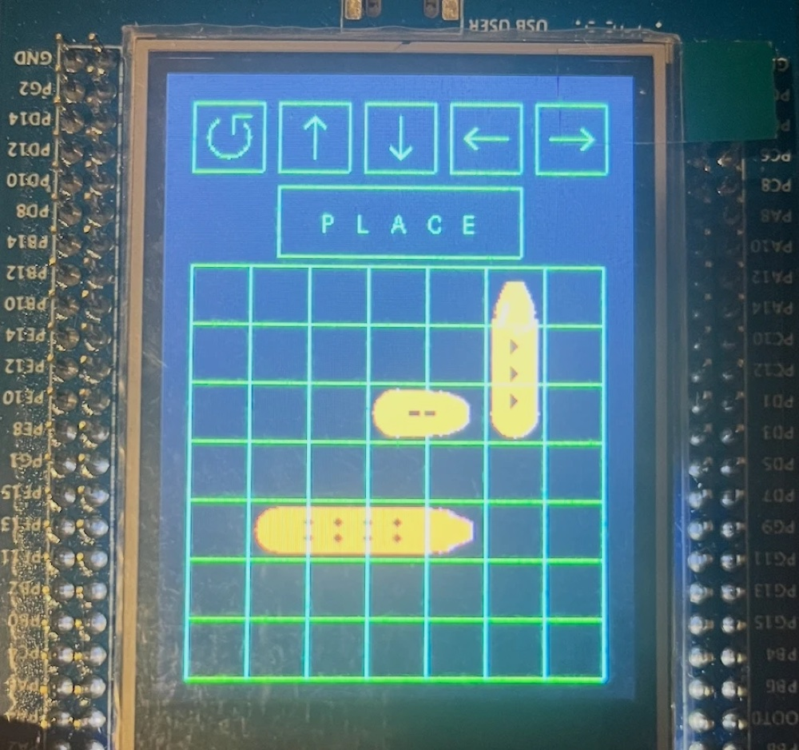
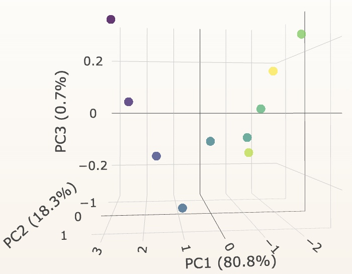
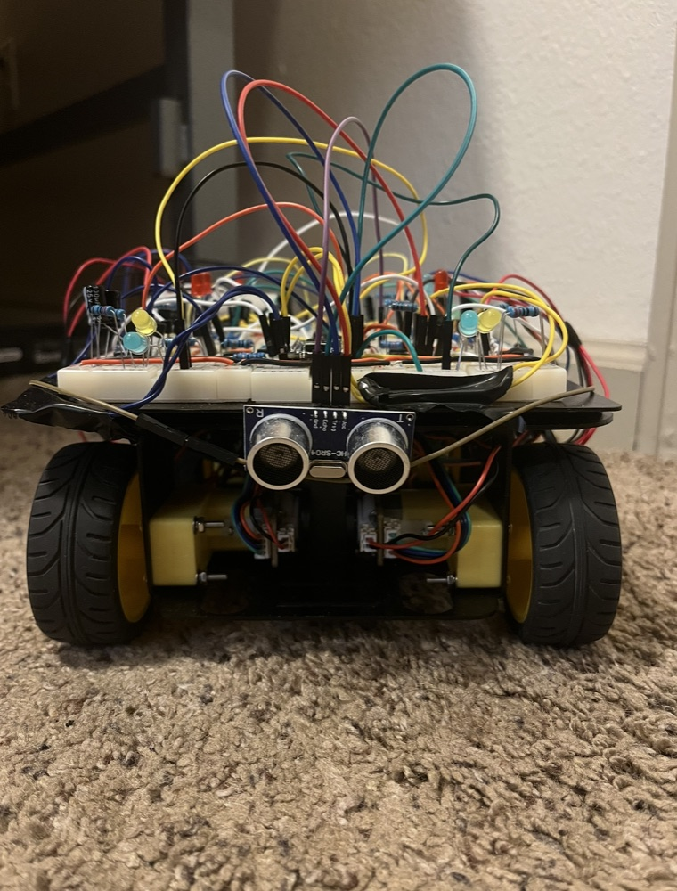
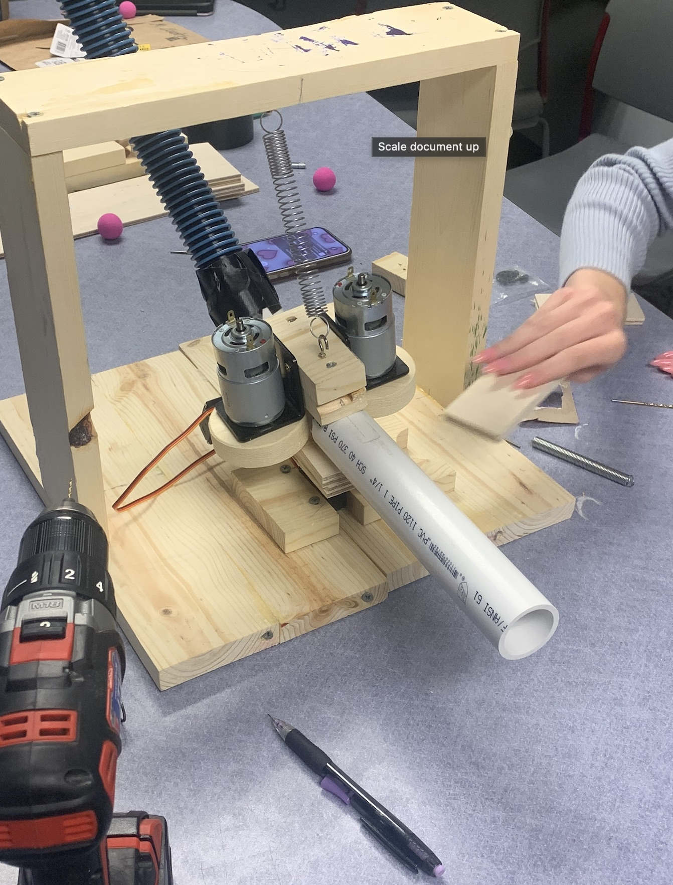

Selected work
Projects
- Developing a battery-powered distributed sensing platform integrating an STM32 microcontroller, environmental and motion sensors, GPS, onboard storage, and RF communication for terrestrial and lunar research.
- Translating sponsor needs into system requirements and use cases; supporting component selection, power-budget analysis, prototype testing, and coordination across a six-member team.

- Designed 2D data structures for game state and collision detection, plus efficient rendering routines for a hardware-constrained UI.
- Integrated SPI communication and GPIO-controlled display and input peripherals.

- Built a full-stack application that lets users upload, model, and analyze custom datasets through an interactive interface, including PCA with 2D/3D visualization.
- Implemented backend data processing and database storage and retrieval for structured user data.

- Built an autonomous robot over a semester: power distribution, signal conditioning, and control circuitry.
- Modeled circuits in LTSpice, then built and tested breadboard implementations; authored lab reports.
- Programmed on an Arduino Nano platform.

1st place
- Designed an electronic, joystick-controlled launching mechanism so children with limited mobility can take part in foam-dart battles.
- Led system design and programmed the joystick and launch control software.
- Developed the user interface of a student assignment-management mobile app in Dart, focused on clarity and usability.
- Presented the prototype to potential investors.
More code on GitHub.